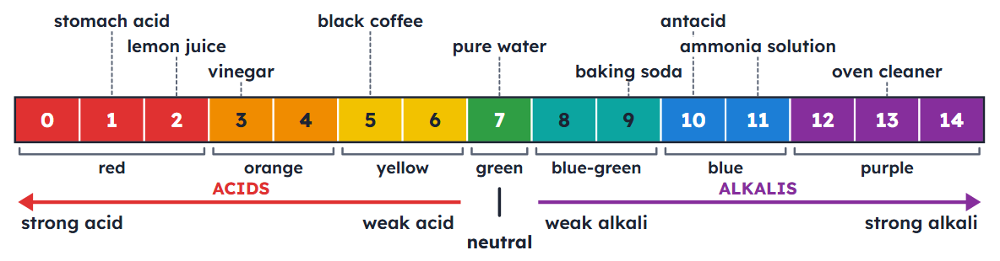

Module 6 · Acids and bases
MODULE 6
Acids and bases
Print pack 09

📖 Coursebook pp 149–175 coursebook pages · not in this preview
🖨️ Pack 09 coursebook pages · not in this preview🧪 Pack 03a (practicals) coursebook pages · not in this preview
You must be able to
- Describe the properties of acids and of bases, and say what an alkali is
- Name where common acids and alkalis are found
- Use litmus, methyl orange and universal indicator to identify acids, neutral substances and alkalis
- Use the pH scale 0–14 and the universal-indicator colours to say how acidic or alkaline a substance is
- Describe neutralisation: acid + base → salt + water, and how it moves the pH towards 7
- Explain everyday neutralisation: antacids, toothpaste, lime on soil
- Draw a line graph (heading, labels, scale, points, line) and read line graphs and bar charts of pH
Start here